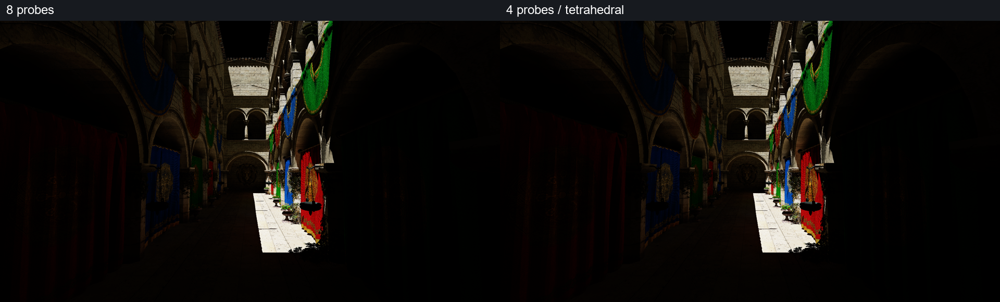
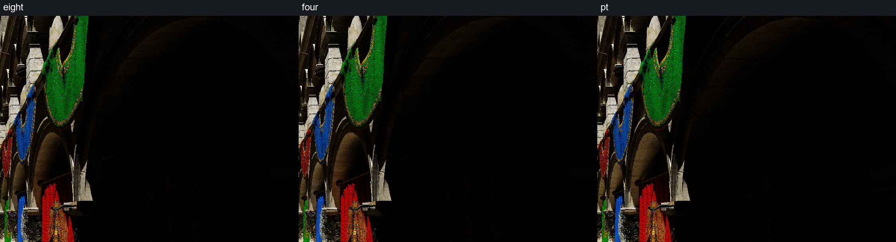
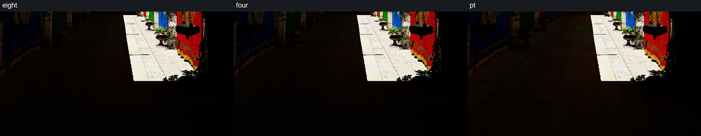
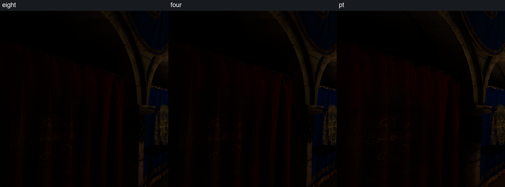
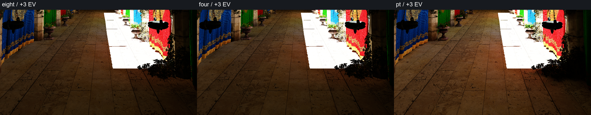
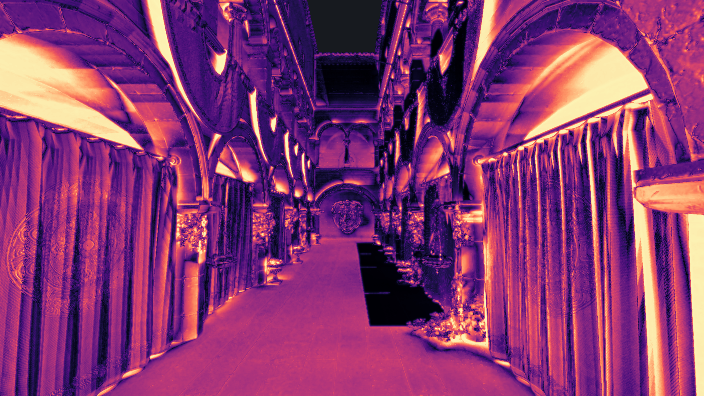
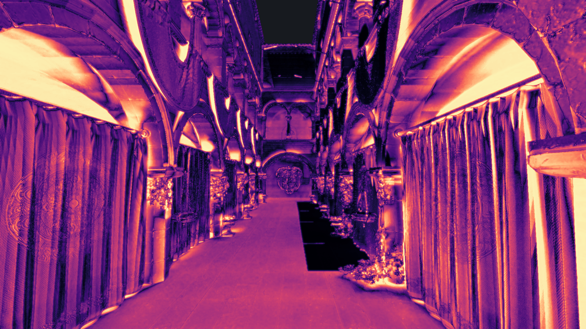

SponzaLambert，1920×1080，RTX 5070、D3D12。默认相机，方向光50，点光关闭。原生DDGI像素查询，无Final Gather/NRD/ReSTIR。沿用官方Sponza探针布局22³，每probe 256条射线，全量更新，relocation/classification开启。两种插值分别预热8192帧，再清空Accumulate并累积8192帧。参考未经降噪65536 spp PT；相机/主表面法线逐像素校验相同。每组正常更新、冻结更新各计时512帧。
4点从原单元8个角点中选取包含查询点的四面体：立方体沿000→111对角线分为6份，根据bias后坐标排序选取四角。保留SDK方向、深度矩可见性和irradiance编码/解码。选择与重心权重按未relocate网格计算，可见性使用relocate后的实际探针位置。零权重不加下限，避免共享面额外贡献。所有DDGI缓存查询均使用所选模式，包括probe更新的递归间接光，因此本实验是完整路径对照。
| 模式 | MSE | HDR-FLIP | 整图ms | 主着色ms | 冻结主着色ms | 累积翻倍变化RMS |
|---|---|---|---|---|---|---|
| eight | 0.00053743027 | 0.41045 | 4.466 | 1.139 | 1.133 | 0.0099% |
| four | 0.00056392573 | 0.41252 | 3.588 | 0.901 | 0.896 | 0.0113% |
主着色包含直接光和阴影射线，并非纯probe插值耗时；冻结探针仍保留主着色。RMS比较4096→8192帧，用于检验稳定性，不等同正确性。指标在线性HDR可见表面mask上求值，FLIP使用ACES、PPD67及相同PT曝光范围。

当前静态视角中，4点没有出现明显新增的硬边接缝或大块漏光，但暗部地面与墙脚局部的亮度分布有所改变，整体误差略增。两种模式仍保留相对PT的暗部/接触遮蔽偏差，4点并不改善这些问题。不能据单个静态相机排除所有方向性伪影或运动时的梯度变化。
整图加速不仅来自像素主着色：probe追踪命中点的递归间接光也查询相同插值，因此更新部分也受益。冻结主着色包含直接光与阴影射线，不能称为纯插值成本。



以下三图统一额外提亮3EV，仅用于检查伪影，不参与指标计算。

Magma固定[0,1]，黑紫误差低，橙黄误差高。8点在前，4点在后；mask外深灰。

